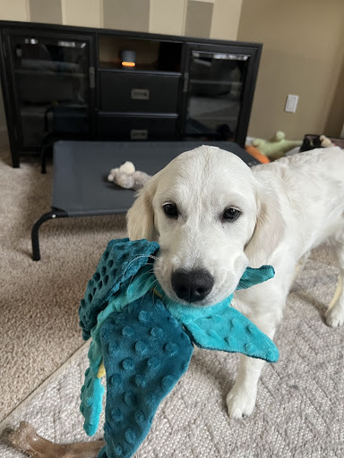
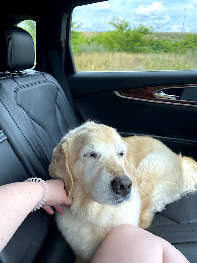
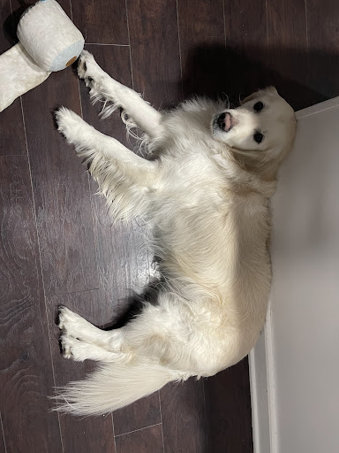

Bacon Q Dog

Bacon Q. Dog is a 9yr old labradoodle. He prefers to spend his days lounging among the three different beds and couches that his family has gifted him. He enjoys a walk or two around the neighborhood, as long as he can pretend that he doesn't see any of the other animals to avoid the embarrassment of not wanting to admit he has no wolf-like skills in chasing them.
At night just as the rest of the family is ready to relax, Bacon suddenly wants to release all of his energy. He will place his toys on a mini couch and frantically drag the couch around, giving his toys "a ride." There is also a lot of rolling. Lots and lots of rolling.
Photo Gallery


Likes
- Belly rubs
- Playing tug-of-war
- Sneaking onto the couch
Koda
Koda is a 1 year old English Golden Retriever. Some of her nicknames include Koda Bear and KP. Her favorite human foods are watermelon and pumpkin, and she is terrified of baths.
Koda enjoys dragging the family on long walks, eating ice cubes, playing fetch, and doing living room zoomies in her free time.
Photo Gallery
Likes
- Long Walks
- Duck Toy
- Sprinklers
- Stealing Socks
Daisy
Daisy is a 14-year-old Golden Retriever. Some of her nicknames include Daisy Duke and Slipper. Her favorite human food is popcorn, and she is terrified of vacuum cleaners.
Daisy enjoys helping her mom work, taking naps on the fireplace, and playing with her laser toy.
Photo Gallery
Likes
- Sunbathing
- Squishmallows
- Napping
- Eating
Charlie
Charlie is a 6 year old Golden Retriever. Some of his nicknames include Char and Charlee Bear. His favorite human foods are french fries and bread, and he is terrified of nail guns.
Charlie enjoys swimming and playing with his rabbit toy named Walter.
Photo Gallery
Likes
- His brother Sparky
- Playing
- Snow
- Bunnies
Cody

Cody is a 7yr old Pembroke Corgi. He was born in Cavalier Farms, Seattle. He prefers to spend his days lounging on the bean bag. Every day, he enjoys two walks around the neighborhood and likes to make friends with other doggie friends. If lucky enough, he might see the cyclist, but he is not allowed to give chase.
Cody loves traveling. He enjoys walking on the beach and taking sun naps. But he hates cold weather. He would like to stay at home lounging by the fireplace in winter.
Photo Gallery


Likes
- Traveling
- Lounging
- Tennis Balls
- Warm Weather